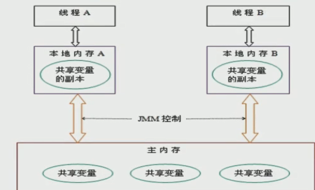
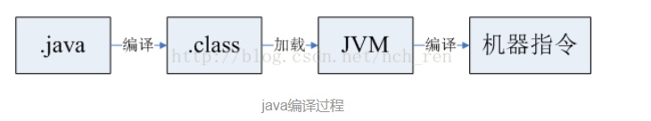
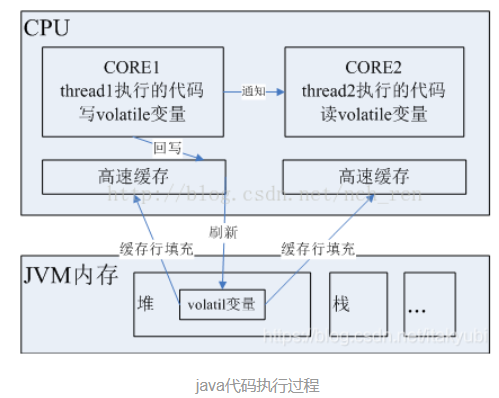
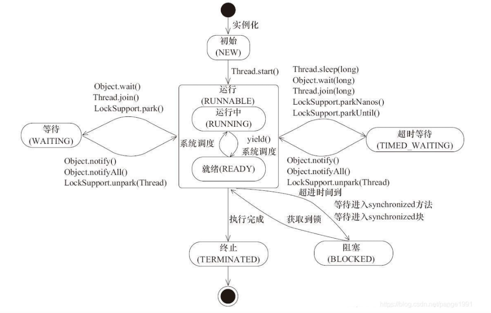
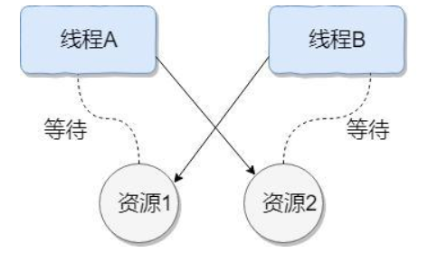

java面试之并发
高并发
前言
在写这篇博客的时候，我是准备跳槽了，跳槽的原因也很简单，我做的岗位没有达到的预期，可以说做的东西跟Java都不搭边，，，，，
在这之前很多东西都已经学过了，但是一直没有用到，所以随着时间的推移也就慢慢的遗忘了。我认为工作的意义除了早日帮老板实现财富自由，还有的就是让我们自己学的东西能够得到巩固吧。
跳不跳槽呢，我认为主要看下面几点：
- 工资有没有达到你的预期
- 你做的东西对你下一次找工作有没有帮助
- 有没有一个可以说服自己不跳槽的理由
就说这些吧。。。
线程和进程的区别
- 一个进程包括多个进程
- 线程是处理机调度的最小单位
- 每条线程并行执行不同的任务
- 不同的进程使用不同的内存空间
- 所有的线程共享一片相同的内存空间（进程主内存），但是呢，每个线程也都拥有自己单独的栈内存来存储本地数据。（JMM内存模型）
实现多线程的方式有哪些
- 继承Thread类：Java单继承，不推荐
- 实现Runnable接口：Thread也是继承了thread接口，推荐
- 实现callable接口：实现callable接口，配合future task使用，有返回值
- 使用线程池：复用，节约资源
线程池
线程池的工作主要是控制运行的线程的数量，处理过程中将任务放入队列，然后在线程创建后启动这些任务，如果线程数量超过了最大数量超出数量的线程排队等候,等其他线程执行完毕，再从队列中取出任务来执行。
特点：线程复用，控制最大并发数，管理线程
Executors.newFixedThreadPool(int): 执行长期的任务，性能好很好
Executors.newSingleThreadExecutor(): 一个任务一个任务执行的场景
Executors.newCachedThreadPool(): 执行很多短期异步的小程序或者负载较轻的服务
线程池里的7大参数
- corePoolSize: 线程池中的常驻核心线程数
- maximumPoolSize: 线程池能容纳的同时执行的最大线程数，此值必须大于等于1
- keepAliveTime: 多余的空闲线程的存活时间。当前线程池数量超过corePoolSize时，当空闲时间达到keepAliveTime值时，多余的线程会被销毁只剩下corePoolSize个线程为止。
- unit: keepAliveTime的单位
- workQueue: 任务对列，被提交但是尚未被执行的任务。
- threadFactory: 表示生成线程池中工作线程的线程工厂，用于创建线程一般默认的即可
- handler: 拒绝策略，表示当线程池满了并且工作线程数大于等于线程池的最大线程数
线程池不允许使用Executor去创建，而是通过ThreadPoolExecutor的方式，这样的处理方式让写的同学更加明确线程池的运行规则，规避资源消耗殆尽
说明：Excutors返回的线程池对象的弊端如下：
允许请求队列长度为Integer.MAX_VALUE，可能会堆积大量的线程，从而导致 OOM。
CachedThreadPool:
允许的创建线程池数量为Integer.MAX_VALUE，可能会导致创建大量的线程，从而导致 OOM.
线程池的拒绝策略
是什么
等待队列满了，再也塞不下新任务了，同时线程池的max也达到了，无法持续为新任务服务，这时我们需要拒绝策略机制合理的处理这个问题
JDK内置的拒绝策略
AbortPolicy: 默认的策略，直接抛出RejectedException异常组织系统运行
CallerRunPolicy: “调用者运行”一种调节机制 ，该策略既不会抛弃任务也不会抛出异常，而是将某些任务回退到调用者，从而境地新任务的流量
DiscardOldestPolicy: 抛弃队列中等待最久的任务，然后把当前任务加入队列中尝试再次提交
DiscardPolicy: 直接丢弃任务，不予任何处理也不抛出异常。如果允许任务丢失，这是最好的策略。
以上策略均实现了RejectExecutionHandler接口
合理配置线程池
CPU密集型：
1
2// 查看CPU核心数
System.out.println(Runtime.getRuntime().availableProcessors());CPU密集的意思是该任务需要大量的运算，而没有阻塞，CPU一直全速运行。CPU密集任务只有在真正的多核CPU上才可能得到加速（通过多线程）。
而在单核CPU上无论你开几个模拟的多线程该任务都不可能得到加速，因为CPU的总运算能力有限。
CPU密集型任务配置应该尽可能少的线程数量
一般公式：CPU核心数 + 1 个线程的线程池
IO密集型
由于IO密集型任务线程并不是一直执行任务，则应该配置尽可能多的线程，如CPU核心数 * 2
IO密集型，即该任务需要大量的IO ，即大量的阻塞。在单线程上运行IO密集的任务会导致浪费大量的CPU运算能力浪费在等待。
所以在IO密集型任务中使用多线程可以大大的加速程序运行，即在单核的CPU上，这种加速主要是利用了被浪费掉的阻塞时间。
IO密集型时，大部分线程都阻塞，故需要多配置线程数：
参考公式： CPU核数 / 1 - 阻塞系数
阻塞系数在0.8 ~ 0.9 之间
比如8核CPU: 8 / 1 - 0.9 = 80个线程
使用runnable还是thread
- thread和runnable最大的区别是thread是类，runnable是接口。而Java是不支持多继承的，不过可以实现多个接口，所以至于你用哪个要看你的需求。
- runnable相当于一个作业，而thread才是真正的处理线程，我们需要做的只是去定义这个作业，然后将作业交给线程去处理，这样就达到了松耦合的效果。同时也符合面向对象里的组合使用，也节省了函数的开销。继承thread，不仅有了作业的run方法，还有了thread的其他方法。
- 当需要创建大量的线程的时候，有以下不足：
- 线程生命周期的开销比较高
- 资源消耗问题
- 稳定性问题
- 如果二者可以选择不用那就不用，因为使用这样的裸线程比较容易出现问题，我们还需要去关注线程的数量问题。我们可以使用线程池。executor来使用线程。池化技术可以实现复用，降低了资源的消耗。
thread类中的run方法和start方法有什么区别
start用来启动新创建的线程，而start内部调用了run方法，JDK1.8这样写到“
1
Causes this thread to begin execution; the Java Virtual Machine calls the <code>run</code> method of this thread.翻译：导致线程开始执行，Java虚拟机调用此线程的run方法。这和直接调用run方法不一样，当你调用run方法的时候只会是在原来的线程中调用，没有新的线程启动，start才会启动新的线程。JDK1.8源码注释中这样写到：
1
The result is that two threads are running concurrently: the current thread (which returns from the call to the <code>start</code> method) and the other thread (which executes its <code>run</code> method).new 一个thread，线程就进入了新建状态，调用start方法会启动一个线程并使线程进入就绪状态，当分配到时间片后就可以开始运行了。start会执行线程的相应的准备工作，然后自动执行run方法的内容，这是真正的多线程工作。而执行run方法，会把run方法当作一个mian线程下的普通方法去执行，并不会在某个线程下执行它，所以这并不是真正的多线程工作。
start：用start方法来启动线程，真正实现了多线程运行，这时无需等待run方法体代码执行完毕而直接继续执行下面的代码。通过调用Thread类的start()方法来启动一个线程，这时此线程处于就绪（可运行）状态，并没有运行，一旦得到cpu时间片，就开始执行run()方法，这里方法 run()称为线程体，它包含了要执行的这个线程的内容，Run方法运行结束，此线程随即终止。
run： run()方法只是类的一个普通方法而已，如果直接调用Run方法，程序中依然只有主线程这一个线程，其程序执行路径还是只有一条，还是要顺序执行，还是要等待run方法体执行完毕后才可继续执行下面的代码，这样就没有达到写线程的目的。总结：调用start方法方可启动线程，而run方法只是thread的一个普通方法调用，还是在主线程里执行。这两个方法应该都比较熟悉，把需要并行处理的代码放在run()方法中，start()方法启动线程将自动调用 run()方法，这是由jvm的内存机制规定的。并且run()方法必须是public访问权限，返回值类型为void。
总结： 调用start方法可以启动线程并使线程进入就绪状态，而run方法只是thread的一个普通方法调用，还是在主线程里执行的。
实现并启动线程的两种方法
- 写一个类继承Thread，重写run()方法，然后通过start()方法启动线程
- 实现Runnable接口，实现run()方法，然后用new Thread(Runnable target).start()
谈谈你对volatile的理解
volatile是Java虚拟机提供的轻量级的同步机制,
- volatile关键字首先具有易变性，声明为volatile变量编译器会强制要求读内存，相关语句不会直接使用上一条语句对应的寄存器内容，而是重新从内存中读取。
- 具有不可优化性，volatile告诉编译器，不要对这个变量进行任何激进的优化，甚至将变量直接消除，保证代码中的指令一定会被执行。
- 具有顺序性，能够保证volatile变量间的顺序性，编译器不会进行乱序优化，不过要注意与非volatile变量之间的操作，还是可能被编译器重排序
- 保证可见性
- 不保证原子性
- 禁止指令重排
JMM你谈谈
JMM (JAVA Memory Model，简称JMM)本身是一种抽象的概念，并不真实存在，他描述的是一组规则或者规范，通过规范定制了程序中的各个变量（包括实例字段，静态字段和构成数组对象的元素）的访问方式
可见性
工作内存，主存的理解
由于JVM运行程序的实体是线程，而每个线程创建时都会为其创建一个工作内存，工作内存是每个线程的私有数据空间，而JMM中规定所有的变量都存贮在主内存，主内存是共享区域内存，所有的线程都可以访问，但线程对变量的操作必须在工作内存中进行，首先将变量从主内存拷贝到工作内存，然后对变量进行操作，操作完后再将变量写回主内存，不能直接操作主内存中的变量各个线程中的工作内存存储着主线程中的变量的副本拷贝，因此不同的线程无法访问对方的工作内存，通讯必须通过主存来完成。

可见性原理
当修改volatile变量时，会给cpu发送一个信号告诉其他cpu这个变量已修改，当其他cpu调用这个变量时，就会先检查是否有收到修改该变量的信号，有则重新从内存中读取。volatile是无锁的，类似于乐观锁的机制。（多核CPU）
在说这个问题之前，我们先看看CPU是如何执行java代码的。首先编译之后Java代码会被编译成字节码.class文件，在运行时会被加载到JVM中，JVM会将.class转换为具体的CPU执行指令，CPU加载这些指令逐条执行。如下图，


以多核CPU为例（两核），我们知道CPU的速度比内存要快得多，为了弥补这个性能差异，CPU内核都会有自己的高速缓存区，当内核运行的线程执行一段代码时，首先将这段代码的指令集进行缓存行填充到高速缓存，如果非volatil变量当CPU执行修改了此变量之后，会将修改后的值回写到高速缓存，然后再刷新到内存中。如果在刷新会内存之前，由于是共享变量，那么CORE2中的线程执行的代码也用到了这个变量，这是变量的值依然是旧的。volatile关键字就会解决这个问题的，如何解决呢，首先被volatile关键字修饰的共享变量在转换成汇编语言时，会加上一个以lock为前缀的指令，当CPU发现这个指令时，立即做两件事：
将当前内核高速缓存行的数据立刻回写到内存；
使在其他内核里缓存了该内存地址的数据无效。
第一步很好理解，第二步如何做到呢？使用MESI协议。
MESI协议在早期的CPU中，是通过在总线加LOCK#锁的方式实现的，但这种方式开销太大，所以Intel开发了缓存一致性协议，也就是MESI协议，该解决缓存一致性的大致思路是：当CPU写数据时，如果发现操作的变量是共享变量，即在其他CPU中也存在该变量的副本，那么他会发出信号通知其他CPU将该变量的缓存行设置为无效状态。当其他CPU使用这个变量时，首先会去嗅探是否有对该变量更改的信号，当发现这个变量的缓存行已经无效时，会从新从内存中读取这个变量。
以上这些就是volatile关键字的内部实现机制，使用Volatile有什么好处呢？从底层实现原理我们可以发现，volatile是一种非锁机制，这种机制可以避免锁机制引起的线程上下文切换和调度问题。因此，volatile的执行成本比synchronized更低。
MESI（缓存一致性协议）是一种保持一致性的协议。它的方法是在CPU缓存中保存一个标记位，这个标记位有四种状态：
M：Modify，修改缓存，当前CPU的缓存已经被修改了，即与内存中数据已经不一致了
E：Exclusive，独占缓存，当前CPU的缓存和内存中数据保持一致，而且其他处理器并没有可使用的缓存数据
S：Share，共享缓存，和内存保持一致的一份拷贝，多组缓存可以同时拥有针对同一内存地址的共享缓存段
I：Invalid，实效缓存，这个说明CPU中的缓存已经不能使用了
CPU的读取遵循下面几点：
如果缓存状态是I，那么就从内存中读取，否则就从缓存中直接读取。
如果缓存处于M或E的CPU读取到其他CPU有读操作，就把自己的缓存写入到内存中，并将自己的状态设置为S。
只有缓存状态是M或E的时候，CPU才可以修改缓存中的数据，修改后，缓存状态变为M。
JMM关于同步的规定
- 线程解锁前，必须把共享变量的值刷新回主存
- 线程加锁前，必须读取主存的最新值到自己的工作内存
- 加锁解锁是同一把锁
原子性
使用Atomic原子类
有序性指令重排
计算机在执行程序的时候，为了提高性能，编译器和处理器常常会对指令做重排，一般分为以下三种：
源代码 —-> 编译器优化的重排——>指令并行的重排——->内存系统的重排——->最终执行的指令
说明：
单线程环境里面为确保程序的最终结果和代码顺序执行的结果一致，处理器在进行重排序的时候要考虑指令间的数据依赖性
多线程环境中线程交替执行，由于编译器优化重排的存在，两个线程中使用的变量能否保证一致性是无法确定的，结果无法预测。
1 | |
1 | |
这个案例是说，由于指令重排，可能会先执行语句2，然后呢flag变为true，然后还没执行语句1，就执行了语句3.
禁止指令重排小结
volatile实现禁止指令重排优化，从而避免多线程环境下程序出现乱序执行的现象
- 保证特定操作的执行顺序
- 保证某些变量的内存可见性（利用该特性实现volatile的内存可见性）。
由于编译器和处理器都能执行指令重排优化。如果在指令间插入一条Memory Barrier则会告诉编译器和CPU，不管什么指令都不能和这条Memory Barrier指令重排序，也就是说通过内存屏障禁止在内存屏障前后的指令执行重排序优化。 内存屏障的另一个作用是强制刷出各种CPU的缓存数据,因此任何CPU上的线程都能读取到这些数据的最新版本
你在哪里用过volatile
单例模式
DCL双重检查加锁实现单例模式，本意是想要实现延迟初始化
1 | |
CAS
CAS(compare and set)比较并交换，与期待值相等则set,不相等不set .他是一条CPU并发原语他的功能是判断内存某个位置的值是否为预期值，如果是则更新为新的值，这个过程是原子的。
CAS并发原语体现在JAVA语言中就是sun.misc.Unsafe类中的各个方法。调用Unsafe类中的CAS方法，JVM会帮我们实现CAS汇编指令。这是一种完全依赖硬件的功能，通过它实现了原子操作。再次强调，由于CAS是一种系统原语，原语是属于操作系统用语范畴，是由若干指令组成的，用于完成某个功能的一个过程，并且原语的执行必须都是连续的，在执行过程中不允许被中断，也就是说CAS是一条CPU的原子指令，不会造成所谓的数据不一致问题。
Unsafe类
是CAS的核心类，由于Java方法无法直接访问底层系统，需要通过本地（native）方法来访问，Unsafe相当于是一个后门，基于该类可以直接操作特定内存的数据。Unsafe类存在于sum.misc包中,其内部方法操作可以像C的指针一样直接操作内存，因为Java中CAS操作的执行依赖于Unsafe类的方法。
注意Unsafe类中的所有方法都是native修饰的，也就是说Unsafe类中的方法都直接调用操作系统底层资源执行相应任务。
缺点
如果CAS失败，会一直进行尝试。如果CAS长时间一直不成功，可能会给CPU带来很大的开销。
只能保证一个共享变量的原子操作
当对一个共享变量操作时，我们可以使用循环CAS的方式来保证原子操作，但是对多个共享变量操作时，循环CAS就无法保证操作的原子性，这个时候就可以利用所来保证原子性。
会导致ABA问题
ABA问题是如何产生的
CAS算法实现一个重要的前提需要取出内存中某时刻的数据，并在当下时刻比较替换，那么在这个时间差内会导致数据的变化。
比如说一个线程one从内存位置V取出A，这时候另一个线程two，也从内存中取出A，并且线程two进行了一些操作将值变成了B，然后线程two又将V位置的数据变为A，这个时候线程one进行CAS操作发现内存中的值任然是A，然后线程one操作成功。
尽管线程one的CAS操作是成功的，但是不代表这个过程没有问题。
多线程原理
相当于玩游戏机，但是只有一个游戏机（相当于一个cpu），start是开始排队，然后当轮到你了，就是相当于处理机给你分到了时间片，然后你就开始玩，就相当于执行你的run方法。当玩完了就相当于run()执行结束了或者被提前打断了相当于调用了stop方法。那么线程就会死亡，死亡的线程是无法再次进行start()的。
总结： 对线程就是分时利用CPU，宏观上让所有的线程一起执行，也叫并发。
并发和并行的区别
- 并行还是并发取决于CPU的核心数量，多一个核心数就可以多处理一个线程，所以如果CPU有多个核心的话，是可以实现并行的。
- 时间点不同。并发是同一时间段发生了很多事，这些事情交替执行。并行是同一时刻这些事情一起执行而不是交替。
线程的6种状态
初始状态
线程被创建（new），但是还没有被start()
就绪状态
线程被start(),但是还没有被分到时间片
运行状态
线程分到时间片，开始运行
阻塞状态
线程因为请求不到资源，或者资源被占用导致处于阻塞状态
等待状态
进入该状态表示当前线程需要等待其他的线程做出一些特定的动作（通知或者中断）
超时状态
此状态不同于等待状态，超时等待状态可以在指定的时间内自行返回的。sleep() wait() join()
终止状态
表示当前线程已经执行完毕

什么是线程死锁
死锁是指两个或者两个以上的线程在执行过程中，由于竞争资源或者彼此通信而造成的一种阻塞的现象。若无外力的干涉，将一直持续下去导致程序无法继续执行下去。此时称系统处于死锁状态或者是系统产生了死锁。这些永远在等待的线程称为死锁线程。

如何避免死锁
- 破坏互斥条件：这个条件我们无法破坏，因为我们用锁本来就是想让他们互斥的。一个资源每次只能被一个进程使用
- 破坏请求与保持条件：一个进程因请求资源而阻塞时，对以获得资源保持不放。
- 破坏不剥夺条件：一个进程以获得的资源，在没有使用完之前不得强行剥夺。
- 破坏循环等待条件：若干线程之间形成首尾相接的循环等待资源的关系。
什么是死锁，活锁
- 死锁： 死锁是两个或者多个线程之间由于竞争资源而导致的一种阻塞的现象。可以通过避免一个线程获取多个锁；一个锁占用一个资源；使用定时锁；
- 死锁的必要条件：互斥条件、请求与保持条件、不剥夺条件、循环等待条件
- 活锁：线程之间相互谦让都无法获取相应资源继续执行。
CountDownLatch
CountDownLatch是一个同步工具类，用来协调多个线程之间的同步，或者起到线程之间的通信，而不是用作互斥的作用。
CountDownLatch能够使一个线程在等待另外一些线程完成各自工作之后，再继续执行。使用一个计数器进行实现。计数器初始值为线程的数量。当每一个线程完成自己任务后，计数器的值就会减一。当计数器的值为0时，表示所有的线程都已经完成一些任务，然后在CountDownLatch上等待的线程就可以恢复执行接下来的任务。
CountDownLatch的用法
CountDownLatch典型用法：
1、某一线程在开始运行前等待n个线程执行完毕。将CountDownLatch的计数器初始化为new CountDownLatch(n)，每当一个任务线程执行完毕，就将计数器减1 countdownLatch.countDown()，当计数器的值变为0时，在CountDownLatch上await()的线程就会被唤醒。一个典型应用场景就是启动一个服务时，主线程需要等待多个组件加载完毕，之后再继续执行。
2、实现多个线程开始执行任务的最大并行性。注意是并行性，不是并发，强调的是多个线程在某一时刻同时开始执行。类似于赛跑，将多个线程放到起点，等待发令枪响，然后同时开跑。做法是初始化一个共享的CountDownLatch(1)，将其计算器初始化为1，多个线程在开始执行任务前首先countdownlatch.await()，当主线程调用countDown()时，计数器变为0，多个线程同时被唤醒。
CountDownLatch的不足
CountDownLatch是一次性的，计算器的值只能在构造方法中初始化一次，之后没有任何机制再次对其设置值，当CountDownLatch使用完毕后，它不能再次被使用。
CyclicBarrier
循环栅栏，是一个可以循环利用的屏障。
作用： 就是会让所有的线程都等待完成后才会继续 下一步的动作。
例子： 我们约朋友一起吃饭，有些朋友会早到，有些可能会晚到，但是呢这个餐厅有个规定那就是，必须等人全部到齐了以后才会让你进入，这里的朋友就是各个线程，餐厅就是CyclicBarrier。
构造方法：
1 | |
解析：
- parties 是参与线程的个数。
- 第二个参数Runable，这个 参数的意思是一个线程到达后要做的任务
重要方法：
1 | |
- 线程调用await(),表示自己已经到达栅栏
- BrokenBarrierException表示栅栏已经被破坏，破坏的原因可能是其中一个线程await()时被中断或者超时。
基本使用：
需求：一个线程组的线程需要等待所有的线程完成后再继续执行下一次任务。
代码实现：
1 | |
乐观锁和非乐观锁
基本概念
乐观锁和悲观锁是两种思想，用于解决并发场景下的数据竞争问题。
- 乐观锁：乐观锁在操作数据时非常乐观，认为别人不会同时修改数据。因此乐观锁不会上锁，只是在执行更新的时候判断一下在此期间别人是否修改了数据：如果别人修改了数据则放弃操作，否则执行操作。
- 悲观锁：悲观锁在操作数据时比较悲观，认为别人会同时修改数据。因此操作数据时直接把数据锁住，直到操作完成后才会释放锁；上锁期间其他人不能修改数据。
实现方式
在说明实现方式之前，需要明确：乐观锁和悲观锁是两种思想，它们的使用是非常广泛的，不局限于某种编程语言或数据库。
悲观锁的实现方式是加锁，加锁既可以是对代码块加锁（如Java的synchronized关键字），也可以是对数据加锁（如MySQL中的排它锁）。
乐观锁的实现方式主要有两种：CAS机制和版本号机制，下面详细介绍。
CAS（Compare And Swap）
CAS操作包括了3个操作数：
- 需要读写的内存位置(V)
- 进行比较的预期值(A)
- 拟写入的新值(B)
CAS操作逻辑如下：如果内存位置V的值等于预期的A值，则将该位置更新为新值B，否则不进行任何操作。许多CAS的操作是自旋的：如果操作不成功，会一直重试，直到操作成功为止。
这里引出一个新的问题，既然CAS包含了Compare和Swap两个操作，它又如何保证原子性呢？答案是：CAS是由CPU支持的原子操作，其原子性是在硬件层面进行保证的。
下面以Java中的自增操作(i++)为例，看一下悲观锁和CAS分别是如何保证线程安全的。我们知道，在Java中自增操作不是原子操作，它实际上包含三个独立的操作：（1）读取i值；（2）加1；（3）将新值写回i
因此，如果并发执行自增操作，可能导致计算结果的不准确。在下面的代码示例中：value1没有进行任何线程安全方面的保护，value2使用了乐观锁(CAS)，value3使用了悲观锁(synchronized)。运行程序，使用1000个线程同时对value1、value2和value3进行自增操作，可以发现：value2和value3的值总是等于1000，而value1的值常常小于1000。
1 | |
首先来介绍AtomicInteger。AtomicInteger是java.util.concurrent.atomic包提供的原子类，利用CPU提供的CAS操作来保证原子性；除了AtomicInteger外，还有AtomicBoolean、AtomicLong、AtomicReference等众多原子类。
下面看一下AtomicInteger的源码，了解下它的自增操作getAndIncrement()是如何实现的（源码以Java7为例，Java8有所不同，但思想类似）。
1 | |
源码分析说明如下：
（1）getAndIncrement()实现的自增操作是自旋CAS操作：在循环中进行compareAndSet，如果执行成功则退出，否则一直执行。
（2）其中compareAndSet是CAS操作的核心，它是利用Unsafe对象实现的。
（3）Unsafe又是何许人也呢？Unsafe是用来帮助Java访问操作系统底层资源的类（如可以分配内存、释放内存），通过Unsafe，Java具有了底层操作能力，可以提升运行效率；强大的底层资源操作能力也带来了安全隐患(类的名字Unsafe也在提醒我们这一点)，因此正常情况下用户无法使用。AtomicInteger在这里使用了Unsafe提供的CAS功能。
（4）valueOffset可以理解为value在内存中的偏移量，对应了CAS三个操作数(V/A/B)中的V；偏移量的获得也是通过Unsafe实现的。
（5）value域的volatile修饰符：Java并发编程要保证线程安全，需要保证原子性、可视性和有序性；CAS操作可以保证原子性，而volatile可以保证可视性和一定程度的有序性；在AtomicInteger中，volatile和CAS一起保证了线程安全性。关于volatile作用原理的说明涉及到Java内存模型(JMM)，这里不详细展开。
说完了AtomicInteger，再说synchronized。synchronized通过对代码块加锁来保证线程安全：在同一时刻，只能有一个线程可以执行代码块中的代码。synchronized是一个重量级的操作，不仅是因为加锁需要消耗额外的资源，还因为线程状态的切换会涉及操作系统核心态和用户态的转换；不过随着JVM对锁进行的一系列优化(如自旋锁、轻量级锁、锁粗化等)，synchronized的性能表现已经越来越好。
版本号机制
除了CAS，版本号机制也可以用来实现乐观锁。版本号机制的基本思路是在数据中增加一个字段version，表示该数据的版本号，每当数据被修改，版本号加1。当某个线程查询数据时，将该数据的版本号一起查出来；当该线程更新数据时，判断当前版本号与之前读取的版本号是否一致，如果一致才进行操作。
需要注意的是，这里使用了版本号作为判断数据变化的标记，实际上可以根据实际情况选用其他能够标记数据版本的字段，如时间戳等。
下面以“更新玩家金币数”为例（数据库为MySQL，其他数据库同理），看看悲观锁和版本号机制是如何应对并发问题的。
考虑这样一种场景：游戏系统需要更新玩家的金币数，更新后的金币数依赖于当前状态(如金币数、等级等)，因此更新前需要先查询玩家当前状态。
下面的实现方式，没有进行任何线程安全方面的保护。如果有其他线程在query和update之间更新了玩家的信息，会导致玩家金币数的不准确。
1 | |
为了避免这个问题，悲观锁通过加锁解决这个问题，代码如下所示。在查询玩家信息时，使用select …… for update进行查询；该查询语句会为该玩家数据加上排它锁，直到事务提交或回滚时才会释放排它锁；在此期间，如果其他线程试图更新该玩家信息或者执行select for update，会被阻塞。
1 | |
版本号机制则是另一种思路，它为玩家信息增加一个字段：version。在初次查询玩家信息时，同时查询出version信息；在执行update操作时，校验version是否发生了变化，如果version变化，则不进行更新。
1 | |
优缺点和适用场景
乐观锁和悲观锁并没有优劣之分，它们有各自适合的场景；下面从两个方面进行说明。
功能限制
与悲观锁相比，乐观锁适用的场景受到了更多的限制，无论是CAS还是版本号机制。
例如，CAS只能保证单个变量操作的原子性，当涉及到多个变量时，CAS是无能为力的，而synchronized则可以通过对整个代码块加锁来处理。再比如版本号机制，如果query的时候是针对表1，而update的时候是针对表2，也很难通过简单的版本号来实现乐观锁。
竞争激烈程度
如果悲观锁和乐观锁都可以使用，那么选择就要考虑竞争的激烈程度：
- 当竞争不激烈 (出现并发冲突的概率小)时，乐观锁更有优势，因为悲观锁会锁住代码块或数据，其他线程无法同时访问，影响并发，而且加锁和释放锁都需要消耗额外的资源。
- 当竞争激烈(出现并发冲突的概率大)时，悲观锁更有优势，因为乐观锁在执行更新时频繁失败，需要不断重试，浪费CPU资源。
面试官追问：乐观锁加锁吗？
（1）乐观锁本身是不加锁的，只是在更新时判断一下数据是否被其他线程更新了；AtomicInteger便是一个例子。
（2）有时乐观锁可能与加锁操作合作，例如，在前述updateCoins()的例子中，MySQL在执行update时会加排它锁。但这只是乐观锁与加锁操作合作的例子，不能改变“乐观锁本身不加锁”这一事实。
公平锁和非公平锁
ReentrantLock 的公平锁
ReentrantLock 默认采用非公平锁，除非在构造方法中传入参数 true 。
1 | |
公平锁的 lock 方法：
1 | |
我们可以看到，在注释1的位置，有个!hasQueuedPredecessors()条件，意思是说当前同步队列没有前驱节点（也就是没有线程在等待）时才会去compareAndSetState(0, acquires)使用CAS修改同步状态变量。所以就实现了公平锁，根据线程发出请求的顺序获取锁。
非公平锁的lock方法
1 | |
非公平锁的实现在刚进入lock方法时会直接使用一次CAS去尝试获取锁，不成功才会到acquire方法中，如注释2。而在nonfairTryAcquire方法中并没有判断是否有前驱节点在等待，直接CAS尝试获取锁，如注释3。由此实现了非公平锁。
总结： 非公平锁和公平锁的两处不同
非公平锁在调用lock()以后，首先就会调用CAS进行一次抢锁，如果这时候恰巧锁没有被抢占用，那么就直接获取到锁返回了
非公平锁在CAS失败后，和公平锁一样都会进入到tryAcquire()方法，在tryAcquire()方法中如果这个时候发现锁被释放了(state == 0),非公平锁会直接CAS抢锁，但公平锁会判断等待队列里面有没有正在等待的线程，如果有不去抢锁，排在后面。
相对来说非公平锁的性能比较好，因为他的吞吐量比较大。当然非公平锁让获取锁的时间变得更加不确定，可能会导致阻塞队列中的线程长期处于饥饿状态。
sychronized 和 Lock的区别
原始构成
synchronized是关键字属于JVM层面，monitorenter底层是通过monitor对象来完成，其实wait/notify等方法也依赖于monitor对象只有在同步块或方法中才能调用wait/notify等方法monitorexit
Lock是具体类(Java.util.concurrent.locks.lock)是api层面的锁
使用方法
synchronized 不需要用户手动释放锁，当synchronized代码执行完后系统会自动让线程释放对锁的占用
ReentrantLock则需要用户去手动释放锁若没有主动释放锁，就有可能导致死锁现象需要lock()和unlock()配合try/finally语句块来完成.
等待是否可中断
ReentrantLock可中断，1. 设置超时方法tryLock(long timeout, TimeUnit unit)
2. lockInterruptibly()放代码块中，调用interrupt()方法可中断加锁是否公平
synchronized非公平锁
ReentrantLock两者都可以，默认非公平锁，构造方法可以传入Boolean值，true为公平锁，false为非公平锁
绑定多个条件Condition
synchronized没有
Reentrantlock用来实现分组唤醒需要唤醒的线程们，可以精确唤醒，而不是像synchronized要么随机唤醒一个线程要么唤醒全部线程
本博客所有文章除特别声明外，均采用 CC BY-SA 4.0 协议 ，转载请注明出处！